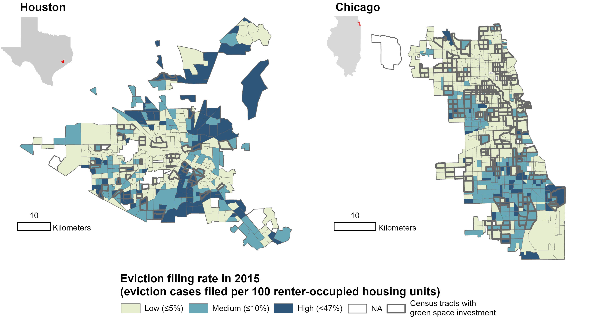
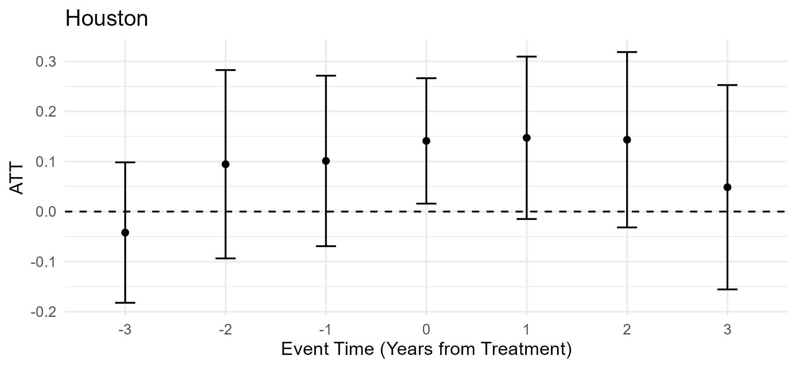
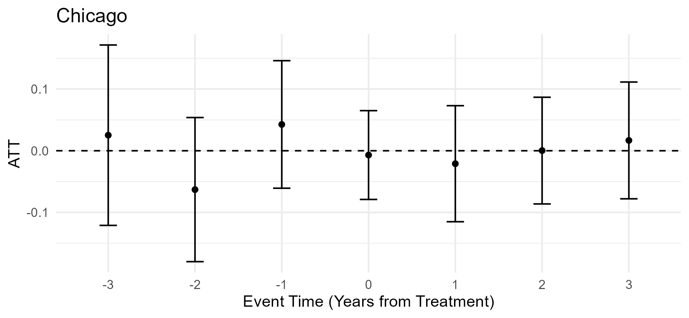
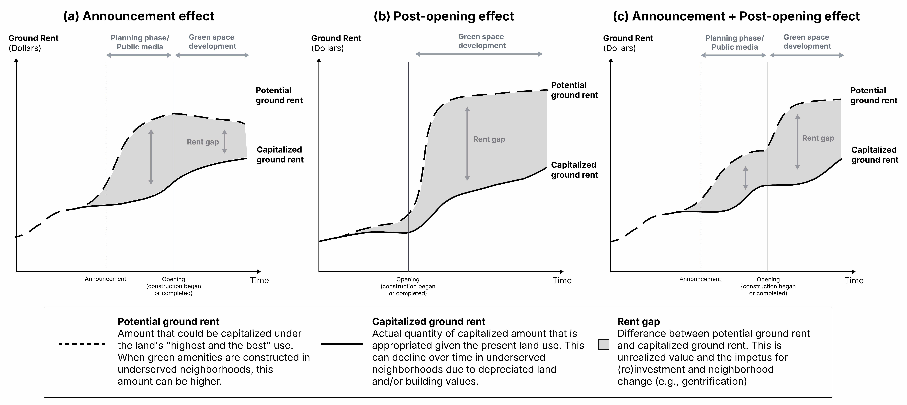

Research / Visual findings
Visual findings
Study 01 / Do green space investments drive evictions? Evidence from Houstong and Chicago
Distinct characteristics between Houston and Chicago
Houston and Chicago are the most populous in the U.S., yet they differ substantially in termms of urban configuration
and planning, park system and green space equity, and eviction laws and tenant protections. For example, Houston does not have a zoning ordinace and
lacks the progressive policies (e.g., inclusionary housing) that are found in Chicago. In existing park provision, 90% of Chicago residents
live within walkable distance (~805 meters) from a park, and the city invested $174 per resident in parks and recreation.
In contrast, only 48% of Houston residents live within a half-mile of a park, and the city's per-resident spending was considerably lower at $37.
Eviction and tenant protections in the two cities also differ. Houston does not have city ordinaces protecting tenants' rights to the
same extent as Chicago. For example, the Protecting Renter Ordinace introduced in 2026 reinforces existing rules by imposing substantial relocation fees on
landlords to offset tenants' move-in/out burdens and applying stricter rules to the "Just Cause Eviction" law. In contrast,
Texas Senate Bill 38 changed the law so that tenants are no longer allowed to counterclaim during eviction hearings and must pay the rent amount
to appeal evictions, thereby making the eviction process faster. Figure 1 presents low, medium and high eviction filing rates in 2015 for the two cities.
Houston tends to have more eviction cases filed than Chicago, which can be attributed to differing (i.e., landlord- vs. tenant-friendly) eviction laws and processes.
Despite such notable differences, both cities share an underlying mechanism: green rent gap. This
provides a basis for landlords to realize enhanced profits by evicting tenants and raising rents.

Do green space investments drive eviction risks?
Green space investments can heighten eviction risks in underserved neighborhoods under some circumstances. We found a significant increase in the logged eviction rate for treated units in Houston in the year of green space investments. On average, the eviction rate in treated units is likely to increase by 15%, relative to comparison units (p = 0.031). Specifically, the treated tracts experienced a 28.2% eviction rate increase when green investment was introduced in 2015 (p = 0.001). In contrast, we found no significant change in eviction after green space investments for treated units in Chicago.


Study 02 / How do green space investments shape the rent gap? Evidence from Houston
Scenarios of the formation of (green) rent gap through green space investments

Urban greening can raise the potential ground rent—defined as the expected ground rent under the land's "highest and best use" (Smith, 1979)—relative to currently capitalized ground rent in underserved neighborhoods. The announcement effect—an anticipatory response to the release of development project plans or media coverage—on potential ground rent can emerge before the opening of green space (Figure 3(a)). Under the post-opening effect scenario (Figure 3(b)), we would not expect the green rent gap to widen discernibly in the planning stage. For example, a pocket park that includes active transportation facilities may receive little media attention but foster gentrification after completion (Rigolon & Németh, 2020). While some actors may invest in real estate during the planning phase to maximize potential profits, the effect of project announcements may be limited because the formation of the green rent gap is uncertain at that juncture, making investments risky (Figure 3(c)).
Do green space investments contribute to rent gap formation heterogeneously?
On average, we found that green space investments are associated with incipient rent gap formation, and its post-opening growth is notable.
Treatment effect of green space investments on the formation of the rent gap is heterogeneous by project size, existing park level, and
locational characteristics (TIRZ and light rail). Figure 4 presents event study plots for the pooled sample and
sub-samples under two model specifications—1) announcement and 2) post-opening.
Findings suggest that rent gap may form earlier and longer to larger greening projects, corresponding to the scenario of
combined announcement and post-opening effects on the rent gap. Smaller green space may receive little market attention before they are opened,
showing the land value appreciation only after investments. Similarly, neighborhoods with a deficit of existing green space
may respond to real estate markets more quickly and strongly than in those with sufficient green space becuase the perceived
aesthetic and economic values of such neighborhoods may increase more substantially, following the combined announcement and post-opening
effects scenario. We also observed clear announcement and post-opening effects of green space investments proximate to TIRZ and light-rail lines,
suggesting that those targeted urban development contexts enhance the effects of green space investments on rent gap formation.